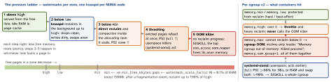

linux · folio
In one line: Idle RAM is lent to the page cache, so “free” is always small; the number that
matters is MemAvailable. Under pressure the kernel reclaims — drops clean file
pages, writes dirty ones, swaps anonymous ones — first in the background (kswapd), then
inside the allocating task (direct reclaim, a stall); when reclaim stops making progress it
OOM-kills the task with the highest oom_score, system-wide or inside the
cgroup that hit memory.max.
Download PDF Print view LaTeX source


Per process: VSZ, RSS, PSS, USS
VSZ | all mapped virtual memory, touched or not — nearly meaningless |
RSS | resident pages; shared pages counted in full in every process |
PSS | each shared page divided by its number of sharers — sums to the real total |
USS | unshared pages only (smem’s term) ≈ what its exit frees |
1000 private pages + 1000 shared with one other process: RSS 2000, PSS 1500, USS 1000. /proc/PID/smaps_rollup sums all mappings: Rss, Pss, Pss_Anon/File/Shmem, Private_*, Swap, SwapPss.
/proc/meminfo — the lines that matter
MemFree | truly unused — low is normal |
MemAvailable | estimate for new programs without swapping: alert on this |
Buffers | raw disk-block cache (small) |
Cached | page cache plus tmpfs and shmem; not SwapCached |
Shmem | tmpfs, /dev/shm, shared anon: swap-backed, on the anon LRU |
SwapCached | swapped in, copy still in swap: dropped without a write |
Dirty | waiting for writeback (Writeback: being written) |
AnonPages | heap, stacks — reclaimable only by swapping |
SReclaimable | slab caches (dentries, inodes) that can be shrunk |
Unevictable | mlock(), ramfs — never reclaimed |
Committed_AS | memory promised; CommitLimit binds in mode 2 |
Zswapped | original size held in zswap (Zswap: compressed) |
MemAvailable = MemFree - reserves + file LRU - min(file/2, Σlow) + reclaimable slab - min(slab/2, Σlow): half the cache is assumed to stay, and Shmem never counts. free(1): used = total - available, buff/cache = Buffers + Cached + SReclaimable, shared = Shmem.
Evidence — read it in this order
$ free -m
total used free shared buff/cache available
Mem: 15890 10410 310 1450 6460 5480
$ cat /proc/pressure/memory
some avg10=12.40 avg60=8.10 avg300=2.30 total=91234567
full avg10=4.02 avg60=2.55 avg300=0.61 total=30123456
$ journalctl -k -g oom # or dmesg -T
nginx invoked oom-killer: gfp_mask=..., order=0, oom_score_adj=0
oom-kill:constraint=CONSTRAINT_NONE,...,task=java,pid=4242,uid=1000
Out of memory: Killed process 4242 (java) total-vm:9123456kB,
anon-rss:6012345kB, file-rss:1024kB, shmem-rss:0kB,
UID:1000 pgtables:12800kB oom_score_adj:0
$ cat /proc/4242/oom_score # 0..2000, top dies
$ echo -500 > /proc/4242/oom_score_adj # -1000 = exemptnginx allocated, java died; a victim cannot log its own SIGKILL — only the kernel log and memory.events record it. PSI: some = share of time ≥1 task stalled on memory, full = all non-idle tasks at once (lost work); total in μs; per cgroup memory.pressure. Trigger: write some 150000 1000000 (150 ms per 1 s) and poll().
Overcommit — vm.overcommit_memory
- 0 (default): refuse only a single request larger than RAM + swap. 1: never refuse. 2 strict:
Committed_AS≤CommitLimit= (RAM - hugetlb) ×overcommit_ratio(50) % + swap;malloc,mmap,forkgetENOMEMinstead of a later kill. Charged: private writable and shared anon mappings; read-only and shared file maps are free. - In 0/1 memory is promised, not given:
malloc(1 GB)succeeds, pages arrive on first touch — the OOM kill happens at a page fault, far from the allocation.
Page cache, writeback, reclaim
- Flusher threads start at
dirty_background_ratio10 %; the writer itself is throttled atdirty_ratio20 % (of free + reclaimable); data dirty >30 s is written on the 5 s wakeup. - LRU lists: active/inactive × file/anon; a refault = an evicted page needed again. MGLRU (
/sys/kernel/mm/lru_gen/enabled): generations instead of two lists;min_ttl_ms=N protects the last N ms of working set — OOM instead of thrashing. drop_caches1 page cache · 2 slab · 3 both; skips dirty pages (syncfirst). A benchmark tool, never a fix.
The OOM killer
- Badness = RSS + swap entries + page-table pages, +
oom_score_adj× allowed/1000 — sooom_scorespans 0–2000. “Allowed” = RAM + swap, or the cpuset / mempolicy nodes, or the memcg limit (constraint=in the log). - Skipped:
oom_score_adj−1000, tasks already reaped, tasks mid-vfork. One victim, SIGKILL; after a 2 s grace the oom_reaper frees its anon memory even if it is stuck. Going below the last value aCAP_SYS_RESOURCEtask set needs it too. vm.panic_on_oom: 0 kill · 1 panic unless cpuset/mempolicy/memcg-constrained · 2 always.oom_kill_allocating_task=1: kill the caller, no scan. SysRq-f: run the OOM killer now. Exit status 137 = 128 + SIGKILL (9).
cgroups, Kubernetes, systemd
memory.events:high(throttled),max,oom,oom_kill,oom_group_kill; alsomemory.peak,memory.reclaim(proactive). Charged: anon, page cache, tmpfs, kernel objects, socket buffers — to the cgroup that first touched the page, even after the task moves. Group kills spare −1000 tasks.- Kubernetes: limit = the container’s
memory.max; over it →OOMKilled, exit 137, restart perrestartPolicy. On cgroup v2 the kubelet setsmemory.oom.groupper container (singleProcessOOMKill: false).oom_score_adj: Guaranteed −997, BestEffort 1000, Burstable min(max(2, 1000 - 1000·request/node RAM), 999). - systemd:
MemoryMin/Low/High/Max/SwapMax/ZSwapMax=,OOMScoreAdjust=,OOMPolicy=continue·stop·kill(= group kill). systemd-oomd (default on since Fedora 34) watches only units withManagedOOMSwap=kill/ManagedOOMMemoryPressure=kill: it kills cgroups holding >5% of swap, largest first, or the most reclaim activity first;ManagedOOMPreference=avoid|omit.
Swap, zram, zswap
| what | how | when full |
|---|---|---|
| swap | partition or file on disk; cold anon pages leave RAM | OOM once RAM is gone too |
| zram | /dev/zramN, a compressed RAM disk used as swap (Fedora 33+) | backing_dev: idle or incompressible pages to disk |
| zswap | compressed cache in front of disk swap, zsmalloc pool | LRU writeback to the swap device |
vm.swappiness 0–200, default 60: relative I/O cost of swap vs file paging; 100 = equal, >100 suits zram/zswap; 0 does not disable swap (it swaps once free + file < high). page-cluster 3 = 8-page swap readahead. Without swap, anon memory is pinned: only file cache — code pages too — can go, so the box thrashes, then OOMs.
Transparent huge pages
enabled: always · madvise (only MADV_HUGEPAGE ranges) · never; build default (Kconfig: always). defrag: always · defer · defer+madvise · madvise (default) · never. 2 MB pages cut TLB misses; cost compaction stalls, khugepaged work, bloat. mTHP: hugepages-<size>kB/enabled, PMD size inherit, others never. Redis: never, and overcommit_memory=1 for fork() snapshots.
When it landed — kernel · systemd
Traps
- A full tmpfs or
/dev/shmshows asCachedyet is not reclaimable — only swap orrmfrees it. memory.highalone never kills: a leaking task is throttled forever unless an agent (systemd-oomd, kubelet) acts on PSI ormemory.events.
Remember
Read available, not free. Reclaim → thrash → kill; high throttles, max kills.